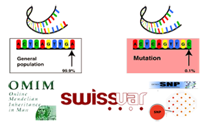
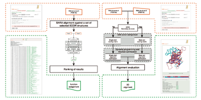
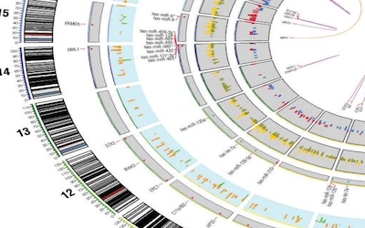

Research
The research activity of the Computational Molecular Biology Unit at UAB touches upon many aspects of computational genomics and structural bioinformatics. Current research topics are as follows:
|
Mutations and Disease
|
Single Nucleotide Polymorphisms (SNPs) are an important source of human
genome variability. The non-synonymous SNPs occurring in coding regions
resulting in single amino acid polymorphisms (SAPs) may affect protein
function and lead to pathology. We are interested to study the
relationship between mutation and disease to develop machine learning
methods for the prediction of disease-related SAPs.
The input features of our methods are sequence, evolutive and functional
information. We have implemented PhD-SNP, a simple method based on
protein sequence and profile data. Recently, in
SNPs&GO, we improved the accuracy
of the detection of disease-related SAPs including protein functional
information. All the predictors has been tested using a cross-validation
procedure on a set of annotated SAPs selected from
SwissVar database. |
Protein Folding Stability and Kinetics
|
|
 Protein folding is a complex process that is responsible for the formation
of the protein tree-dimensional structure. In our work we study the protein
folding focusing on two main aspects: the protein stability and the folding kinetics. We are interested to predict the effect of single point protein
mutation on protein stability. To measure the effect of the mutation, we
use the variation of the free energy change (ddG) upon mutation that can be
calculated as the difference of the free energy variation (dG) for the
mutant and the wild-type proteins. If we consider the unfolding free
energy we
have that more stable mutations correspond to positive ddG values and less
stable mutants to negative ddG. In the 2004 we developed
Protein folding is a complex process that is responsible for the formation
of the protein tree-dimensional structure. In our work we study the protein
folding focusing on two main aspects: the protein stability and the folding kinetics. We are interested to predict the effect of single point protein
mutation on protein stability. To measure the effect of the mutation, we
use the variation of the free energy change (ddG) upon mutation that can be
calculated as the difference of the free energy variation (dG) for the
mutant and the wild-type proteins. If we consider the unfolding free
energy we
have that more stable mutations correspond to positive ddG values and less
stable mutants to negative ddG. In the 2004 we developed
Protein and RNA Structure Comparison and Prediction
|
The structure of biologically relevant macromolecules such as protein and
RNA is important to understand their function. According to this hypothesis
the structure is important to infer the function. Our group is developing
methods for structural alignment to
extract common feature between different molecules and use them to predict
unknown structure. In the 2008
SARA algorithm has been implemented to align RNA tree-dimensional
structures. A new pipeline using SARA program has been used to assign
RNA function using structure similarity. |
Structural variations in cancer genome
|
Recent large-scale sequencing efforts of cancer genomes indicate that genome rearrangements in cancer are more pervasive than earlier thought. A term, called “chromothripsis”, has been coined to describe the massive genome reorganization that happens in a subset of cancer genomes. Such reorganizations frequently create gene fusions that are oncogenic. We are investigating the genome rearrangements in cancer using probabilistic models to identify significant “driver” structural rearrangements. Various modeling techniques including Bayesian, maximum likelihood and support vector machine are being evaluated to gain insight into the structural rearrangements in cancer genomes. The goals are two folds: (a) Investigate and evaluate various statistical modeling techniques to identify significant structural rearrangements in cancer. (b) Investigate evolution of cancer genomes by following progression of genomic rearrangements in various grades of cancer. |
University of Alabama at Birmingham.
619 19th St. South, WP220.
Birmingham (AL), 35249 (USA).